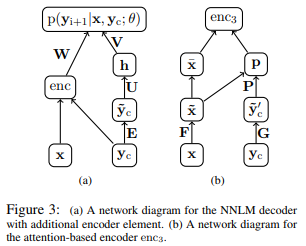

Given the first sentence of an article as input, this model generates a suitable headline for the article
It trains attention based neural network to generate language model

Architecture of the entire model (left section of the diagram)
One hot representation of all words in the input sentence and the context words (in the headline) are processed in the attention based encoder to generate their encoded representation.
One hot representation of context matrix are multiplied by their embedding matrix E to be generate their embedded representations.
Embedded context matrix is multiplied by the weight matrix U, and the result subsequently undergoes non-linear transformation (tanh) to generate its hidden representation h.
Encoded representation from step 1 and the hidden representation h from step 3 are multiplied by their corresponding weight matrices, and the exponential of their summation is used to estimate the probability of the language model
Architecture of the encoder (right section of the diagram)
One hot representation of all words in the input sentence and the context words are multiplied by their corresponding weight matrices F and G to generate each of their hidden representations
Embedded input matrix representation and context matrix representation are multiplied by the weight matrix P to generated the additional hidden representation p.
Hidden representation p and the embedded input matrix are multiplied to create encoded representation of the input that incorporates the attention mechanism
Once the language model is trained, it is combined with other hand engineered features to predict the subsequent word of the headline
Weights between the language model and the hand engineered features can be additionally trained
Instead of encoding the sequence of entire sentence using a single neural network, it might be better to use other forms of deep learning such as RNNs.
Most of the hand engineered features are based on sequential information (such as the presence of unigram, bigram, trigram match)
Sequential deep learning models might be able to remove these additional hand engineered features.
Instead of sentence summarization, I wonder if it is possible to apply similar attention based methods to generate a summary that contains multiple sentences.